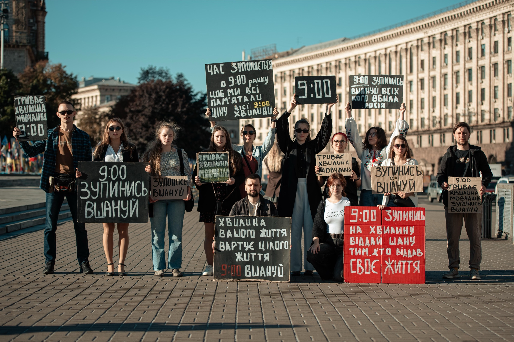
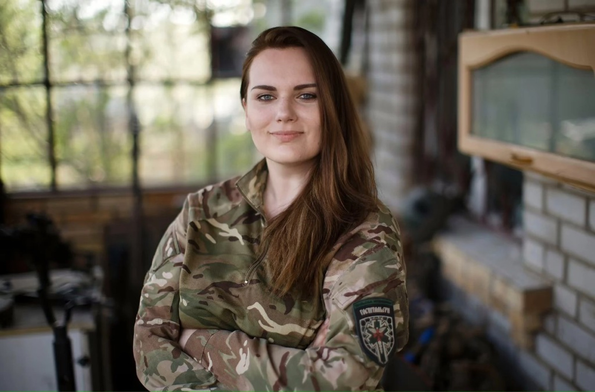
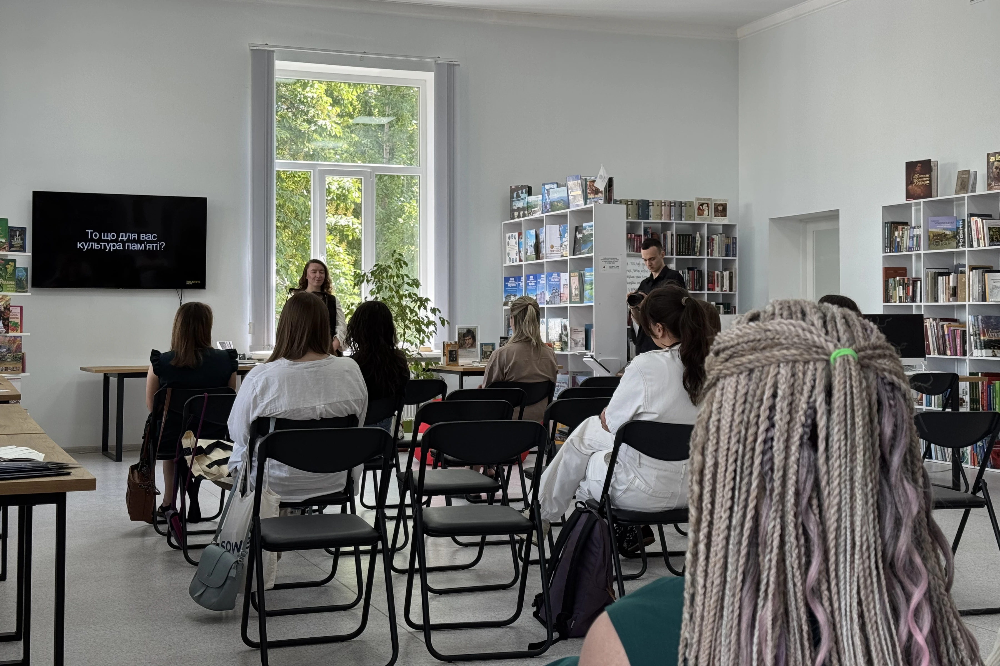
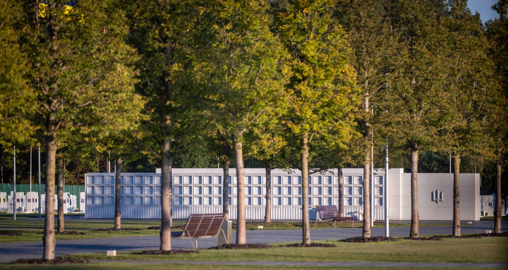
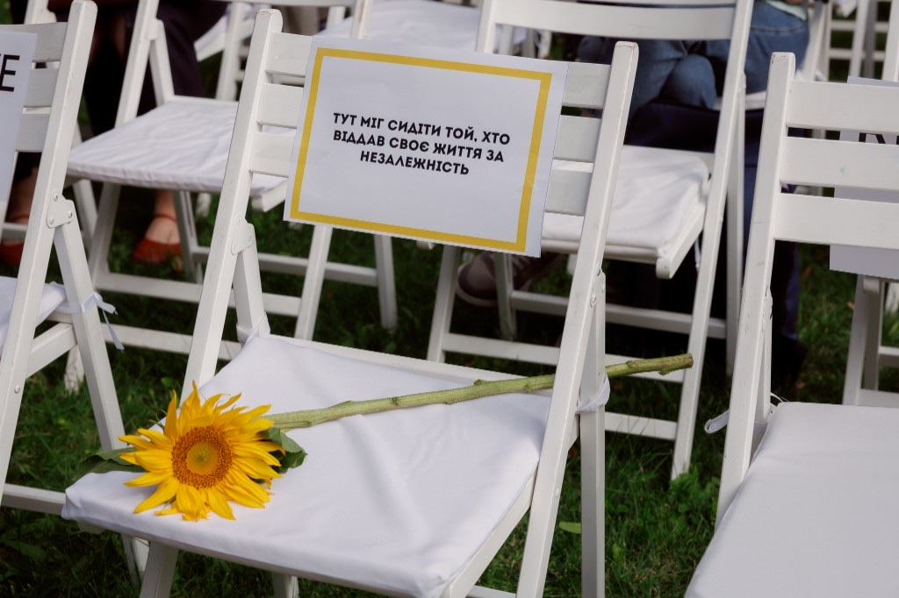
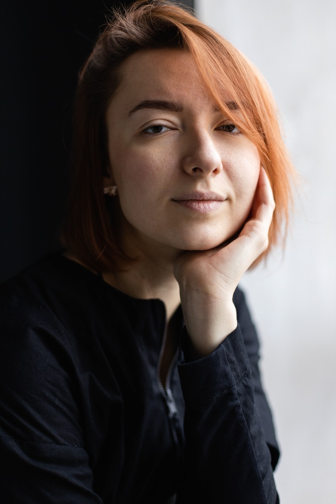
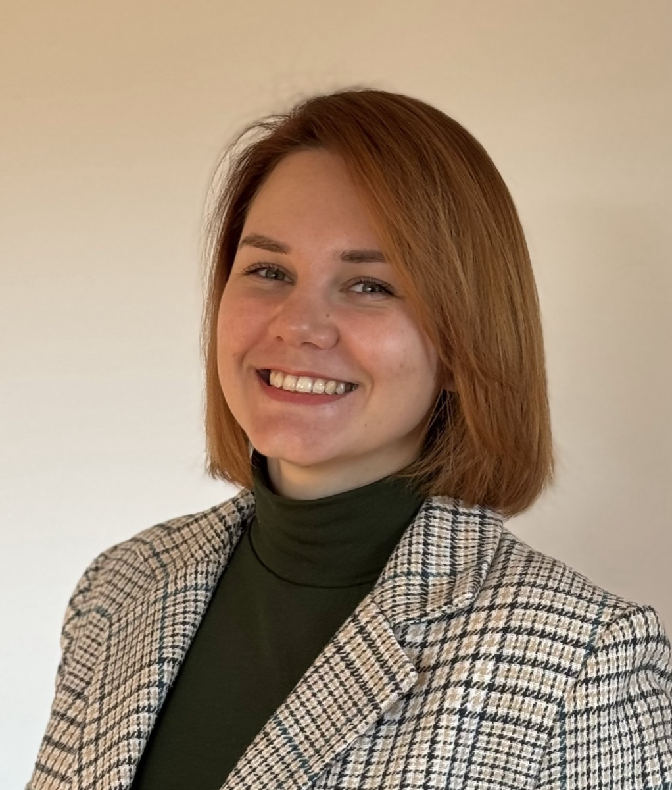
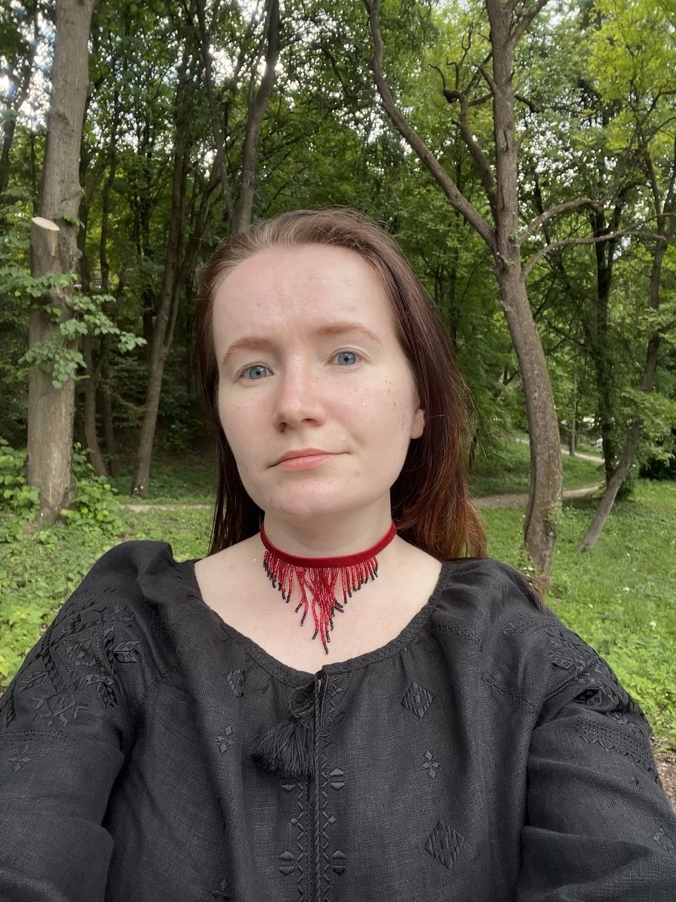
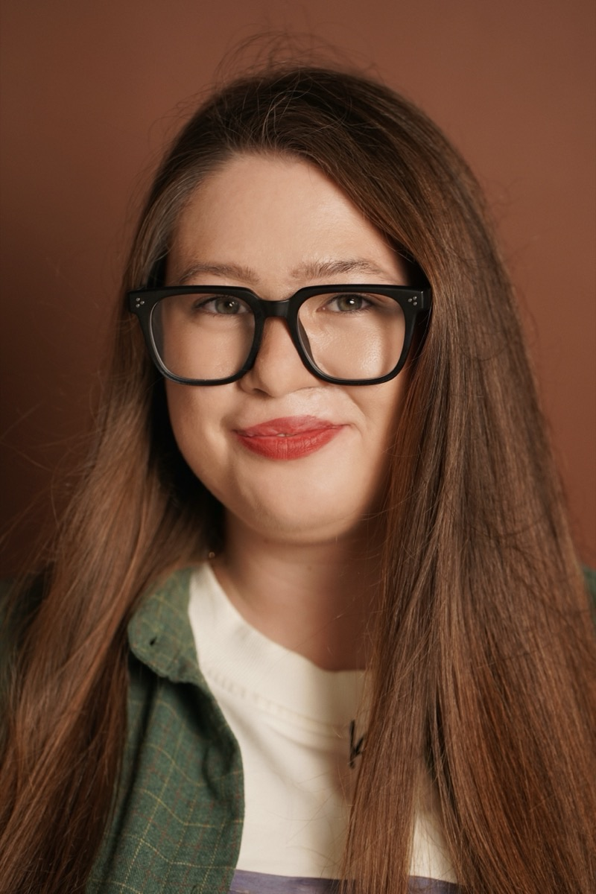
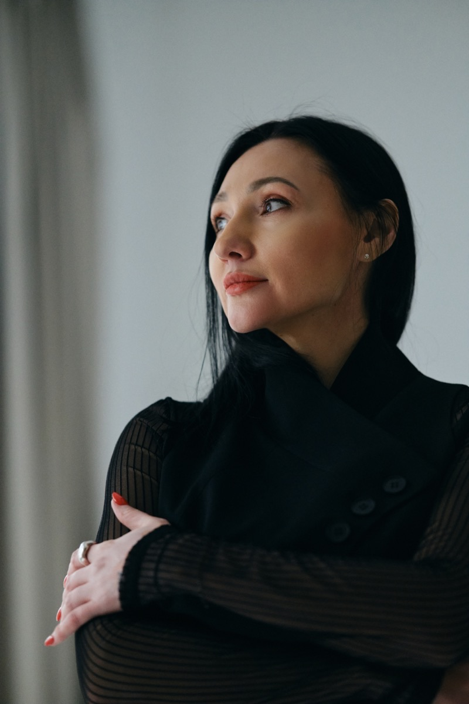

Місія та цінності.
Жодна країна не народжується з готовою культурою памʼяті — її формують роками. Україна проходить цей шлях зараз, і ми його частина.

Історія
В основі «Вшануй» — переконання Ірини (Чеки) Цибух: памʼять не завершується датою в календарі. Вона живе в повсякденні — у вдячності, що триває, в людях, які несуть спогади, і в ритуалах.
Після загибелі Ірини у травні 2024 року її справу продовжила команда однодумців. Сьогодні ГО «Вшануй» розвиває ідею сучасної української культури памʼяті — відкритої, людяної та зрозумілої кожному.
ГО «Вшануй» — організація, яка працює над формуванням та впровадженням нових меморіальних практик в Україні. Зокрема, активно адвокує Хвилину мовчання на національному рівні та інші практики памʼяті. А також працює над розвитком активної спільноти у містах по Україні.
Співзасновницею громадської організації була загибла госпітальєрка, журналістка та Герой України посмертно Ірина (Чека) Цибух, яка привертала увагу до питань памʼятання людей, які загинули під час російсько-української війни.

Місія
Памʼятай про полеглих допомагай живим.
Ми прагнемо, щоб памʼять стала природною частиною повсякденного життя України. Це наше гасло. Ним визначаємо все, що робимо.
-

Досліджуємо
Ми досліджуємо та відроджуємо різноманітні практики, з різних часів та історичних періодів, щоб віднайти саме те, що буде близьким українському суспільству.
-

Створюємо
Ми створюємо практики, які допомагають державі, громадам, бізнесу та кожній людині зробити памʼять частиною життя.
-

Підтримуємо
Ми підтримуємо та допомагаємо зберігати памʼять про наших людей.
Що ми робимо,
щоб поширювати
культуру памʼяті



Наше бачення
Від культури монументів — до культури відповідальності.
Ми працюємо над тим, щоб в Україні сформувалася культура памʼяті, яка житиме незалежно від нас. Культура, у якій Хвилина мовчання стане природною звичкою, громади самі створюватимуть простори памʼяті, бізнес братиме участь у спільних практиках вдячності, а діти зростатимуть із розумінням того, що свобода має свою ціну.
Наша країна зараз переживає багато змін. І одна з них це те, що ми переходимо від культури монументів до культури відповідальності, де відповідальний кожен з нас.
ПідтриматиНаша команда
-

Катерина Даценко
Співзасновниця та голова ГО «Вшануй»
-

Катерина Станкевич
Операційна менеджерка ГО «Вшануй»
-
Катерина Левчук
Комунікаційна менеджерка ГО «Вшануй»
-

Анна Козоріз
SMM-менеджерка ГО «Вшануй»
-

Єлизавета Плескачова
Проєктна менеджерка ГО «Вшануй»
-
Єлизавета Канєвська
Проєктна менеджерка освітнього напрямку
-

Наталя Некипіла
Експертка освітнього напрямку, проєктна менеджерка